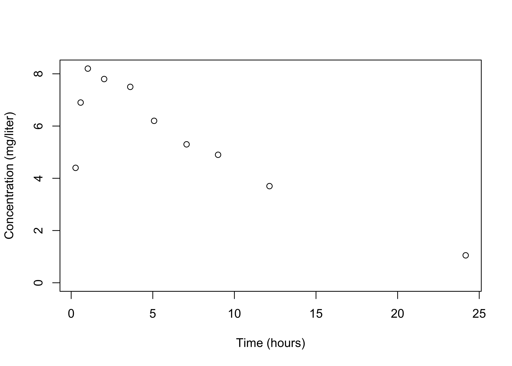
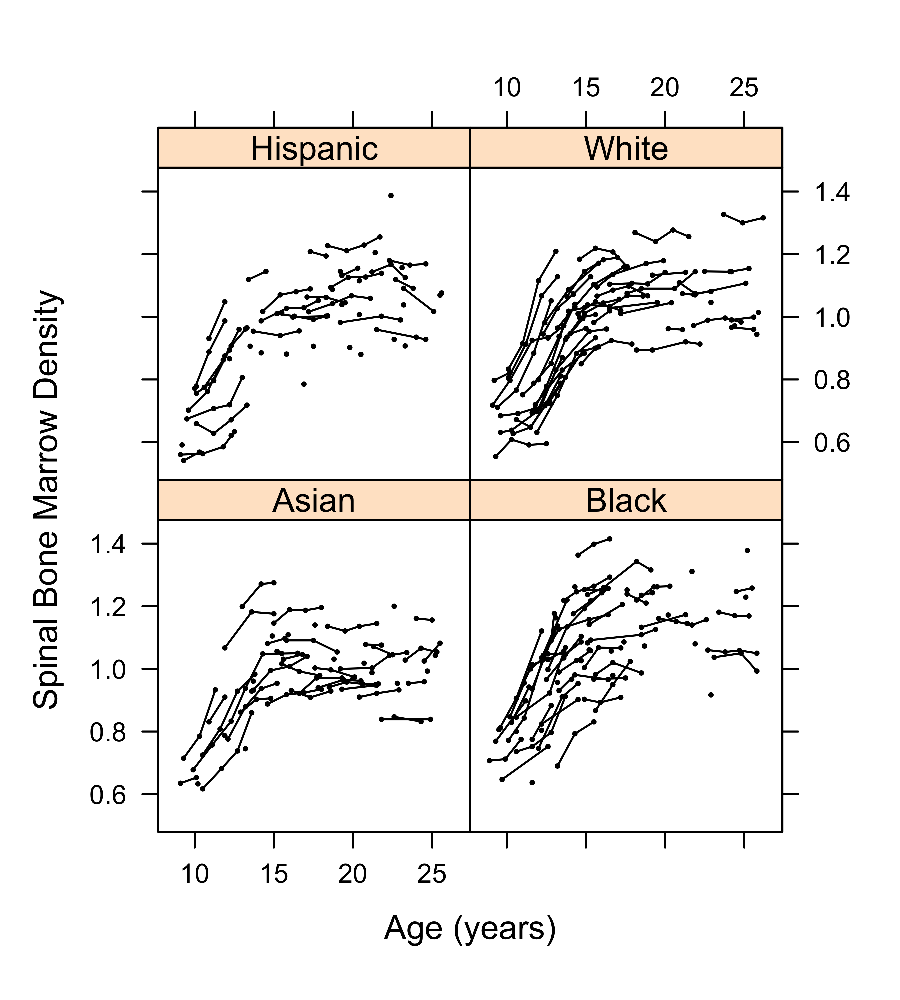

Introduction to STA721
Merlise Clyde (clyde@duke.edu)
Duke University
Introduction to STA721
- Course: Theory and Application of linear models from both a frequentist (classical) and Bayesian perspective
- Prerequisites: linear algebra and a mathematical statistics course covering likelihoods and distribution theory (normal, t, F, chi-square, gamma distributions)
- Introduce R programming as needed in the lab
- Introduce Bayesian methods, but assume that you are co-registered in 702 or have taken it previously
- more info on Course website https://sta721-F24.github.io/website/
- schedule and slides, HW, etc
- critical dates (Midterms and Finals)
- office hours
- Canvas for grades, email, announcements
Please let me know if there are broken links for slides, etc!
Notation
- scalors are \(a\) (italics or math italics)
- vectors are in bold lower case, \(\mathbf{a}\), with the exception of random variables
- all vectors are column vectors \[\mathbf{a}= \left[\begin{array}{c}
a_1 \\
a_2 \\
\vdots \\
a_n
\end{array} \right]
\]
- \(\mathbf{1}_n\) is a \(n \times 1\) vector of all ones
- inner product \(\langle \mathbf{a}, \mathbf{a}\rangle = \mathbf{a}^T\mathbf{a}= \|\mathbf{a}\|^2 = \sum_{i=1}^n a_i^2\); \(\langle \mathbf{a}, \mathbf{b}\rangle = \mathbf{a}^T\mathbf{b}\)
- length or norm of \(\mathbf{a}\) is \(\|\mathbf{a}\|\)
Matrices
- Matrices are represented in bold \(\mathbf{A}= (a_{ij})\) \[\mathbf{A}= \left[\begin{array}{cccc}
a_{11} & a_{12} & \cdots & a_{1m} \\
a_{21} & a_{22} & \cdots & a_{2m} \\
\vdots & \vdots & \vdots & \vdots\\
a_{n1} & a_{n2} & \cdots & a_{nm}
\end{array} \right]
\]
- identity matrix \(\mathbf{I}_n\) square matrix with diagonal elements 1 and off diagonal 0
- trace: if \(\mathbf{A}\) is \(n \times m\) \(\textsf{tr}(\mathbf{A}) = \sum_i^{\max n,m } a_{ii}\)
- determinant: for \(\mathbf{A}\) is \(n \times n\) then the determinant is \(\det(A)\)
- inverse: if \(\mathbf{A}\) is nonsingular \(\mathbf{A}> 0\), then its inverse is \(\mathbf{A}^{-1}\)
Statistical Models
Ohm’s Law: \(Y\) is voltage across a resistor of \(r\) ohms and \(X\) is the amperes of the current through the resistor (in theory) \[Y = rX\]
Simple linear regression for observational data \[Y_i = \beta_0 + \beta_1 x_i + \epsilon_i \text{ for } i = 1, \ldots, n\]
Rewrite in vectors: \[\begin{eqnarray*} \left[ \begin{array}{c} y_1 \\ \vdots \\ y_n \end{array} \right] = & \left[ \begin{array}{c} 1 \\ \vdots \\ 1 \end{array} \right] \beta_0 + \left[ \begin{array}{c} x_1 \\ \vdots \\ x_n \end{array} \right] \beta_1 + \left[ \begin{array}{c} \epsilon_1 \\ \vdots \\ \epsilon_n \end{array} \right] = & \left[ \begin{array}{cc} 1 & x_1 \\ \vdots & \vdots \\ 1 & x_n\end{array} \right] \left[ \begin{array}{c} \beta_0 \\ \beta_1 \end{array} \right] + \left[ \begin{array}{c} \epsilon_1 \\ \vdots \\ \epsilon_n \end{array} \right] \\ \\ \mathbf{Y}= & \mathbf{X}\boldsymbol{\beta}+ \boldsymbol{\epsilon} \end{eqnarray*}\]
Nonlinear Models
Gravitational Law: \(F = \alpha/d^\beta\) where \(d\) is distance between 2 objects and \(F\) is the force of gravity between them
log transformations \[\log(F) = \log(\alpha) - \beta \log(d)\]
compare to noisy experimental data \(Y_i =\log(F_i)\) observed at \(x_i = \log(d_i)\)
write \(\mathbf{X}= [\mathbf{1}_n \, \mathbf{x}]\)
\(\boldsymbol{\beta}= (\log(\alpha), -\beta)^T\)
model with additive error on log scale \(\mathbf{Y}= \mathbf{X}\boldsymbol{\beta}+ \mathbf{e}\)
test if \(\beta = 2\)
error assumptions?
Intrinsically Nonlinear Models
Regression function may be an intrinsically nonlinear function of \(t_i\) (time) and parameters \(\boldsymbol{\theta}\) \[Y_i = f(t_i, \boldsymbol{\theta}) + \epsilon_i\]
Quadratic Linear Regression
Taylor’s Theorem: \[f(t_i, \boldsymbol{\theta}) = f(t_0, \boldsymbol{\theta}) + (t_i - t_0) f'(t_0, \boldsymbol{\theta}) + (t_i - t_0)^2 \frac{f^{''}(t_0, \boldsymbol{\theta})}{2} + R(t_i, \boldsymbol{\theta})\]
\[Y_i = \beta_0 + \beta_1 x_i + \beta_2 x_i^2 + \epsilon_i \text{ for } i = 1, \ldots, n\]
Rewrite in vectors: \[\begin{eqnarray*} \left[ \begin{array}{c} y_1 \\ \vdots \\ y_n \end{array} \right] = & \left[ \begin{array}{ccc} 1 & x_1 & x_1^2 \\ \vdots & \vdots \\ 1 & x_n & x_n^2\end{array} \right] \left[ \begin{array}{c} \beta_0 \\ \beta_1 \\ \beta_2 \end{array} \right] + \left[ \begin{array}{c} \epsilon_1 \\ \vdots \\ \epsilon_n \end{array} \right] \\ & \\ \mathbf{Y}= & \mathbf{X}\boldsymbol{\beta}+ \boldsymbol{\epsilon} \end{eqnarray*}\]
Quadratic in \(x\), but linear in \(\beta\)’s - how do we know this model is adequate?
Kernel Regression (NonParametric)
\[y_i = \beta_0 + \sum_{j = 1}^J \beta_j e^{-\lambda (x_i - k_j)^d} + \epsilon_i \text{ for } i = 1, \ldots, n\] where \(k_j\) are kernel locations and \(\lambda\) is a smoothing parameter \[\begin{eqnarray*} \left[ \begin{array}{c} y_1 \\ \vdots \\ y_n \end{array} \right] = & \left[ \begin{array}{cccc} 1 & e^{-\lambda (x_1 - k_1)^d} & \ldots & e^{-\lambda (x_1 - k_J)^d} \\ \vdots & \vdots & & \vdots \\ 1 & e^{-\lambda (x_n - k_1)^d} & \ldots & e^{-\lambda (x_n - k_J)^d} \end{array} \right] \left[ \begin{array}{c} \beta_0 \\ \beta_1 \\\vdots \\ \beta_J \end{array} \right] + \left[ \begin{array}{c} \epsilon_1 \\ \vdots \\ \epsilon_n \end{array} \right] \\ & \\ \mathbf{Y}= & \mathbf{X}\boldsymbol{\beta}+ \boldsymbol{\epsilon} \end{eqnarray*}\]
Linear in \(\beta\) given \(\lambda\) and \(k_1, \ldots k_J\)
Learn \(\lambda\), \(k_1, \ldots k_J\) and \(J\)
Hierarchical Models

- each line represent individual sample trajectories
- correlation between an individual’s measurements
- similarities within groups
- differences among groups?
- allow individual regressions for each individual ?
- add more structure?
Linear Regression Models
Response \(Y_i\) and \(p\) predictors \(x_{i1}, x_{i2}, \dots x_ip\) \[Y_i = \beta_0 + \beta_1 x_{i1} + \beta_2 x_{i2} + \ldots \beta_{p} x_{ip} + \epsilon_i\]
Design matrix \[\mathbf{X}= \left[\begin{array}{cccc} 1 & x_{11} & \ldots & x_{1p} \\ 1 & x_{21} & \ldots & x_{2p} \\ \vdots & \vdots & \vdots & \vdots \\ 1 & x_{n1} & \ldots & x_{np} \\ \end{array} \right] = \left[ \begin{array}{cc} 1 & \mathbf{x}_1^T \\ \vdots & \vdots \\ 1 & \mathbf{x}_n^T \end{array} \right] = \left[\begin{array}{cccc} \mathbf{1}_n & \mathbf{X}_1 & \mathbf{X}_2 \cdots \mathbf{X}_p \end{array} \right] \]
matrix version \[\mathbf{Y}= \mathbf{X}\boldsymbol{\beta}+ \epsilon\] what should go into \(\mathbf{X}\) and do we need all columns of \(\mathbf{X}\) for inference about \(\mathbf{Y}\)?
Linear Model
- \(\mathbf{Y}= \mathbf{X}\, \boldsymbol{\beta}+ \boldsymbol{\epsilon}\)
- \(\mathbf{Y}\) (\(n \times 1\)) vector of random response (observe \(\mathbf{y}\)); \(\mathbf{Y}, \mathbf{y}\in \mathbb{R}^n\)
- \(\mathbf{X}\) (\(n \times p\)) design matrix (observe)
- \(\boldsymbol{\beta}\) (\(p \times 1\)) vector of coefficients (unknown)
- \(\boldsymbol{\epsilon}\) (\(n \times 1\)) vector of “errors” (unobservable)
Goals:
- What goes into \(\mathbf{X}\)? (model building, model selection - post-selection inference?)
- What if multiple models are “good”? (model averaging or ensembles)
- What about the future? (Prediction)
- Uncertainty Quantification - assumptions about \(\boldsymbol{\epsilon}\)
All models are wrong, but some may be useful (George Box)
Ordinary Least Squares
Goal: Find the best fitting “line” or “hyper-plane” that minimizes \[\sum_i (Y_i - \mathbf{x}_i^T \boldsymbol{\beta})^2 = (\mathbf{Y}- \mathbf{X}\boldsymbol{\beta})^T(\mathbf{Y}- \mathbf{X}\boldsymbol{\beta}) = \| \mathbf{Y}- \mathbf{X}\boldsymbol{\beta}\|^2 \]
- Optimization problem - seek \(\boldsymbol{\beta}\ni \mathbf{X}\boldsymbol{\beta}\) is close to \(\mathbf{Y}\) in squared error
- May over-fit \(\Rightarrow\) add other criteria that provide a penalty Penalized Least Squares
- Robustness to extreme points \(\Rightarrow\) replace quadratic loss with other functions
- no notion of uncertainty of estimates
- no structure of problem (repeated measures on individual, randomization restrictions, etc)
Need Distribution Assumptions of \(\mathbf{Y}\) (or \(\boldsymbol{\epsilon}\)) for testing and uncertainty measures \(\Rightarrow\) Likelihood and Bayesian inference
Random Vectors
Let \(Y_1, \ldots Y_n\) be random variables in \(\mathbb{R}\) Then \[\mathbf{Y}\equiv \left[ \begin{array}{c} Y_1 \\ \vdots \\ Y_n \end{array} \right]\] is a random vector in \(\mathbb{R}^n\)
Expectations of random vectors are defined element-wise: \[\textsf{E}[\mathbf{Y}] \equiv \textsf{E}\left[ \begin{array}{c} Y_1 \\ \vdots \\ Y_n \end{array} \right] \equiv \left[ \begin{array}{c} \textsf{E}[Y_1] \\ \vdots \\ \textsf{E}[Y_n] \end{array} \right] = \left[ \begin{array}{c} \mu_1 \\ \vdots \\ \mu_n \end{array} \right] \equiv \boldsymbol{\mu}\in \mathbb{R}^n \] where mean or expected value \(\textsf{E}[Y_i] = \mu_i\)
Model Space
We will work with inner product spaces: a vector spaces, say \(\mathbb{R}^n\) equipped with an inner product \(\langle \mathbf{x},\mathbf{y}\rangle \equiv \mathbf{x}^T\mathbf{y}, \quad \mathbf{x}, \mathbf{y}\in \mathbb{R}^n\)
Definition: Subspace
A set \(\boldsymbol{{\cal M}}\) is a subspace of \(\mathbb{R}^n\) if is a subset of \(\mathbb{R}^n\) and also a vector space.
That is, if \(\mathbf{x}_1 \in \boldsymbol{{\cal M}}\) and \(\mathbf{x}_2 \in \boldsymbol{{\cal M}}\), then \(b_1\mathbf{x}_1 + b_2 \mathbf{x}_2 \in \boldsymbol{{\cal M}}\) for all \(b_1, b_2 \in \mathbb{R}\)
Definition: Column Space
The column space of \(\mathbf{X}\) is \(C(\mathbf{X}) = \mathbf{X}\boldsymbol{\beta}\) for \(\boldsymbol{\beta}\in \mathbb{R}^p\)
If \(\mathbf{X}\) is full column rank, then the columns of \(\mathbf{X}\) form a basis for \(C(\mathbf{X})\) and \(C(\mathbf{X})\) is a p-dimensional subspace of \(\mathbb{R}^n\)
If we have just a single model matrix \(\mathbf{X}\), then the subspace \(\boldsymbol{{\cal M}}\) is the model space.
Philosophy
- for many problems frequentist and Bayesian methods will give similar answers (more a matter of taste in interpretation)
- For small problems, Bayesian methods allow us to incorporate prior information which provides better calibrated answers
- for problems with complex designs and/or missing data Bayesian methods are often easier to implement (do not need to rely on asymptotics)
- For small problems, Bayesian methods allow us to incorporate prior information which provides better calibrated answers
- For problems involving hypothesis testing or model selection frequentist and Bayesian methods can be strikingly different.
- Frequentist methods often faster (particularly with “big data”) so great for exploratory analysis and for building a “data-sense”
- Bayesian methods sit on top of Frequentist Likelihood
- Goemetric perspective important in both!
Important to understand advantages and problems of each perspective!